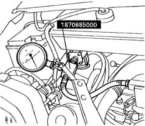

1044EB CHECKING METHANE PRESSURE IN THE LOW PRESSURE CIRCUIT
- Path
- Test > 10 ENGINE > 1044 FUEL CIRCUIT PUMP/S AND DEVICES > 1044E CNG (METHANE) GAS PRESSURE CONTROL DEVICE > 1044EB CHECKING METHANE PRESSURE IN THE LOW PRESSURE CIRCUIT
- Kind
- test / check procedure
- Applies to
- engines: 2.0 16V; all production periods; only with equipment: BIPOWER
- Interactive page
- https://sloeber94.github.io/elrnDB-fDct/en/#/244000545
Applies to: all engines; all production periods; only with equipment: BIPOWER
Position the three-way connector 1870685000between the low pressure pipe and the methane distribution manifold (after having moved the power assisted steering fluid reservoir sideways).
Connect a pressure gauge with a 1/2" attachment and a 16 bar end of scale.
Let the engine run smoothly and check that the pressure is 8 and 10 bar.
If the pressure is lower, also check that the pressure upstream of the reduction unit is not more than 15 bar. If this is the case, then the reduction unit is faulty.
